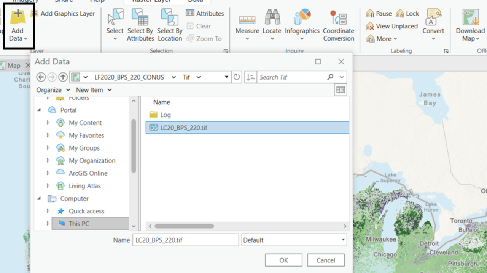
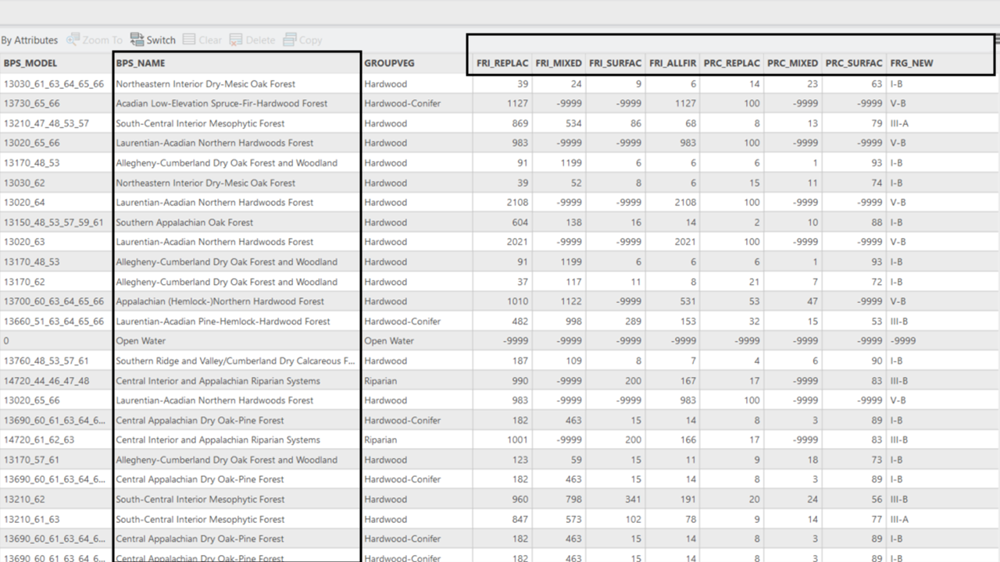
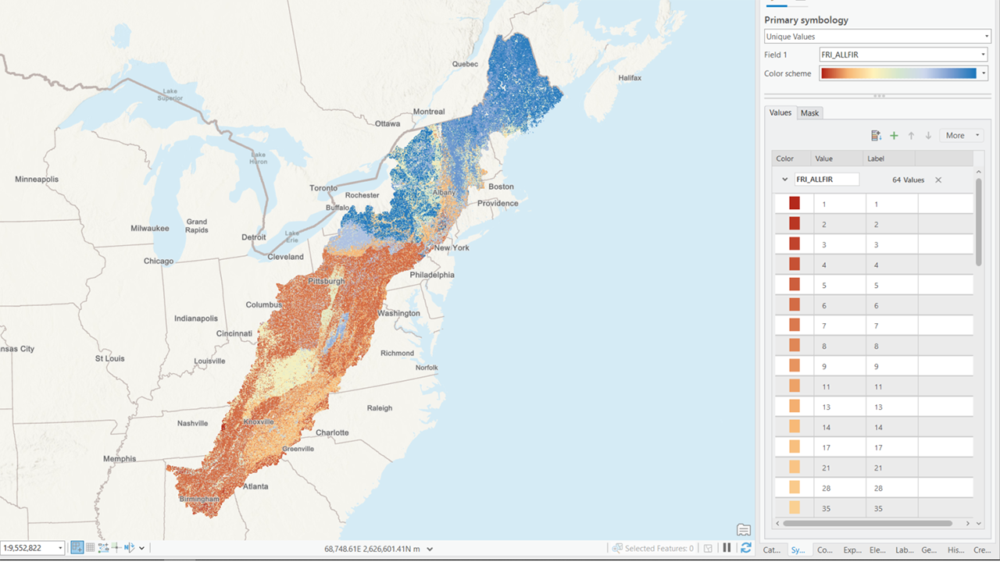
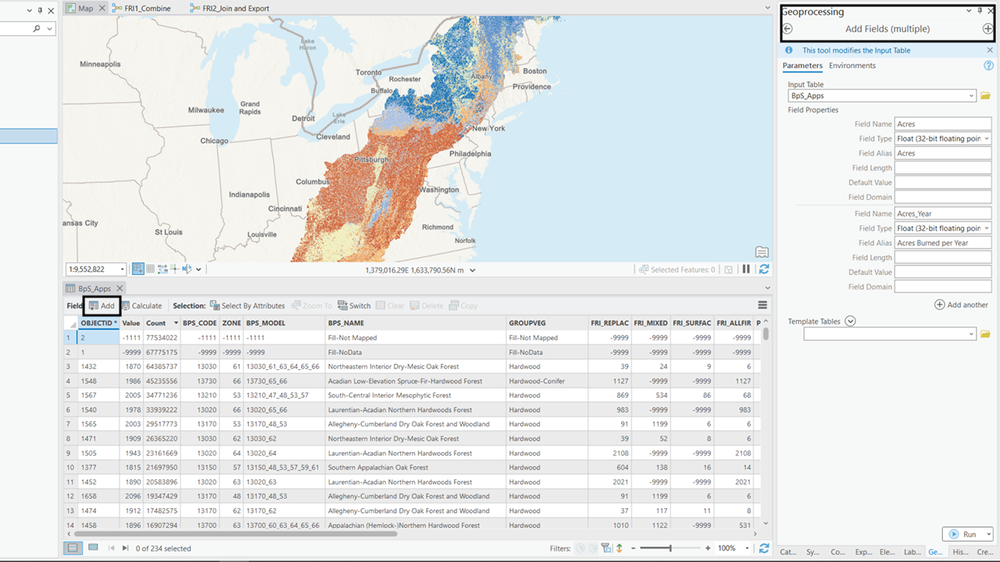
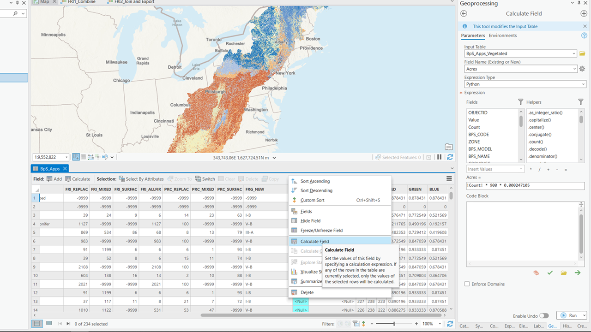

FNA Process: Historical Vegetation
Understanding historical fire regimes using Biophysical Settings
Conducting a fire needs assessment involves understanding historical fire regimes and vegetation types to plan for future fire management and restoration efforts. This guide will walk you through the process, focusing on the LANDFIRE Biophysical Settings (BPS) and Fire Regime (FRI) data.
This site will walk you through working with LANDFIRE spatial data in ArcGIS Pro. Some of this workflow may be possible in QGIS or other open source GIS sources, but those workflows are not documented here.
Step-by-step process
💡 Screenshots of the process are included below the written instructions for those who find them useful.
- Identify historical vegetation types
Load LANDFIRE Biophysical Settings Data: Begin by loading the LANDFIRE Biophysical Settings spatial data into ArcGIS Pro
Clip to area of interest: Use the Clip Raster tool or the Extract by Mask tool (requires a Spatial Analyst license) to clip the BPS spatial data to your specific area of interest. This will help you focus on the relevant geographic region.
Don’t forget to set the environment settings in the tool. Most importantly, make sure the spatial reference of your output raster is correct and set a snap raster (e.g. the BPS_CONUS raster) to ensure your pixel extents match. This will be important later when you use one raster to process another.
- **Identify vegetation types**: Examine the clipped BPS layer to identify the historical vegetation types present in your area.Estimate historical fire return intervals
- Explore fire return interval data: The BPS data include fire return interval (FRI) information. Display the raster on the FRI_ALLFIR field to explore the historical fire return intervals for the identified vegetation type.
LANDFIRE also delivers the fire regime data separately. That dataset includes only fire severity, fire return interval, fire regime groups, and the BPS name and code. Use this if you prefer to work with a simplified version of the data. It will have all the information you need to complete this assessment.
Calculate historical fire acreages
Add fields for calculation: Add an Acres field and an Acres_Year field to your clipped data.
Calculate acres: Use the following formula to calculate the total acres for each vegetation type:
\[ Acres=!COUNT!*900*0.000247105 \]
Here, !COUNT! represents the number of pixels for each vegetation type, 900 is the area of each pixel in square meters, and 0.000247105 converts square meters to acres.
- Calculate acres burned annually: Use the following formula to calculate the number of acres that should burn each year for each BPS:
\[ Acres\_Year=!Acres!/!FRI\_ALLFIR! \]
This calculation will give you an estimate of the annual burned area under historical conditions.
Screenshots for understanding historical fire regime information

![Three panels with geoprocessing windows. The left shows the Extract by Mask tool with BPS as the input raster, the aoi as the input raster or feature mask data, and BPS_Output as the Output raster. The Extraction Area is set to inside and the analysis area is defined. The middle panel shows the Clip Raster tool with the same input and output rasters, the aoi as the output extent, and the X and Y extent defined. The right panel shows the environment settings with the coordinate system set to NAD_1983_Contiguous_USA_Albers to match the BPS coordinate system and the snap raster set to BPS](images/6-crop-bps.png)




Still have questions? LANDFIRE is here to help.
Ask the LANDFIRE Helpdesk (email link).
Search and subscribe to the LANDFIRE YouTube Channel (see tutorials, Office Hours, quick demonstrations).
Join an Office Hour (monthly meeting with open format Q & A with LANDFIRE experts).
Schedule a meeting (email link) with TNC’s LANDFIRE Team.